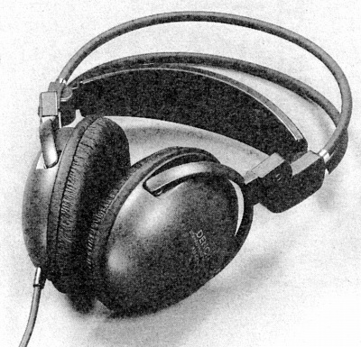
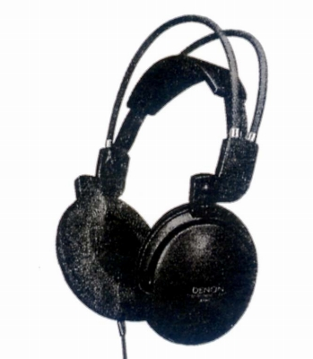
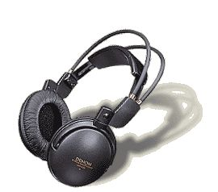

AH-G99
 



■価格 11,000円■型式 ダイナミック型密閉タイプ■振動板 40�o■インピーダンス 32Ω■再生周波数帯域 5-28,000Hz■許容入力 1,200mW■感度 106dB/mW■コード 1.5mLC-OFCクラス1 ■重量 200g（コード含まず）■発売 1996年9月■販売終了 ■備考 抗菌スクリーン採用延長コード(3.5m)付属
デンオンのインデックスへ